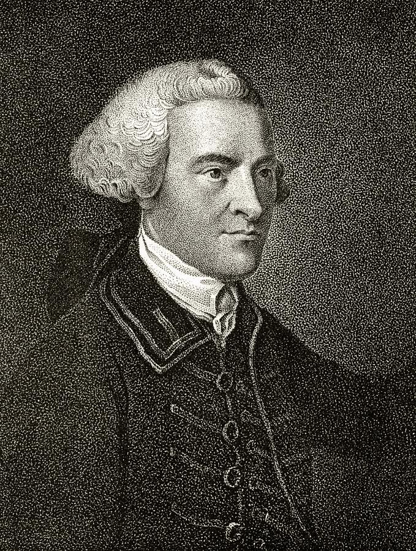

Samuel Adams, born in Boston in 1722, is not merely a name but a force to be reckoned with in the struggle against British oppression. A true Son of Liberty, Adams has dedicated his life to the principles of self-governance, individual rights, and the pursuit of freedom.
Adams is not just a statesman; he is the very embodiment of the revolutionary spirit. His impassioned writings have served as a rallying cry, inspiring patriots across the colonies to stand united against the injustices imposed upon us by a distant monarchy.
As we stand on the brink of a defining moment – the Boston Tea Party – it is essential to recognize Adams as one of its chief architects. His unyielding stance against the tyranny of taxation without representation has galvanized us to take a stand, to make our voices heard in the only language despots understand.
Samuel Adams is not confined to the realm of ink and quill; he is a man of action. His leadership in organizing protests, including the non-importation agreements and the Committees of Correspondence, showcases a commitment to turning revolutionary ideals into tangible movements for change.
As we prepare to make history and cast the shackles of oppression into the harbor, let Samuel Adams be our guide. In understanding his principles, his sacrifices, and his unwavering commitment to liberty, we find not just a historical figure but a compatriot whose spirit ignites the flame of our own resolve.
Let us, as Sons and Daughters of Liberty, march forward with the indomitable spirit of Samuel Adams, knowing that our actions today contribute to a legacy of freedom for generations yet unborn.
As we stand on the verge of a historic moment, preparing to etch our defiance into the tapestry of revolution, it is paramount to acquaint ourselves with the towering figure who stands at the forefront of our struggle – John Hancock.
A scion of liberty and a beacon of resilience, John Hancock was born in Braintree, Massachusetts, in 1737. More than a mere name, he is a living testament to the fervor that propels our fight for independence.
Hancock's legacy extends beyond politics; he is a philanthropist dedicated to the welfare of the community. His commitment to public service and charitable endeavors mirrors the generosity of spirit that underpins our quest for freedom.
As tensions escalate between the colonies and the crown, Hancock emerges as a visionary leader. His role in the Continental Congress and his tireless advocacy for colonial rights have positioned him as a lodestar for those who yearn for self-determination.
As we prepare to make history with the Boston Tea Party, it is crucial to recognize Hancock as a patron of this bold endeavor. His support for the cause of liberty extends beyond rhetoric, manifesting in actions that resonate with the spirit of the Sons of Liberty.
In the footsteps of John Hancock, we stride towards a future unshackled by tyranny. Let his unwavering commitment to freedom guide our own actions as we stand on the precipice of the Boston Tea Party. In understanding Hancock's dedication, let us find inspiration to inscribe our defiance boldly on the pages of history.
As Sons and Daughters of Liberty, we carry the torch lit by John Hancock, knowing that our collective endeavors today shape a destiny where freedom prevails.